Count Regression Part II - Bayesian Approches
A tutorial on count regression
Bruce Campbell
25 July, 2019
count-regression-bayesian-vignette.Rmd##Bayesian Approaches to Count Regression
Please see the intorduction to count regression post for a review of count models from the maximum likelihood point o f view. Here we look to replicate the some of same models from a Bayesian persepctive. We also start our exploration of hierarchical models with an example of a hierarchical zero inflated model. Part III of this series will go more into mixed effects and hierarchical models.
We introduce plate notation here. This is a graphical depiction of the static and probablistic dependiencies in a Bayesian model. The symbols for a visual representation of a graphical model are; a) Solid squares represent constant nodes, which specify fixed- valued variables. b) Stochastic nodes are represented by solid circles. These variables correspond to random variables and may depend on other variables. c) Deterministic nodes (dotted circles) indicate variables that are determined by a specific function applied to another variable. They can be thought of as variable transformations. d) Observed states are placed in clamped stochastic nodes, represented by gray-shaded circles. e) Replication over a set of variables is indicated by enclosing the replicated nodes in a plate (dashed rectangle)
Below are examples of a basic linear model and a generative version of the linear model in plate notation.


##Generate overdispersed synthetic data \(y \sim \theta \;\; e^{\beta_0+\beta_1 x}\)
| N | Mean | SD | Min | Q1 | Median | Q3 | Max | |||
|---|---|---|---|---|---|---|---|---|---|---|
| y | 1000 | 25.33 | 16.95 | 0 | 12 | 21 | 36 | 84 | ||
| x | 1000 | 4.79 | 2.9 | 0.01 | 2.36 | 4.73 | 7.32 | 10 |
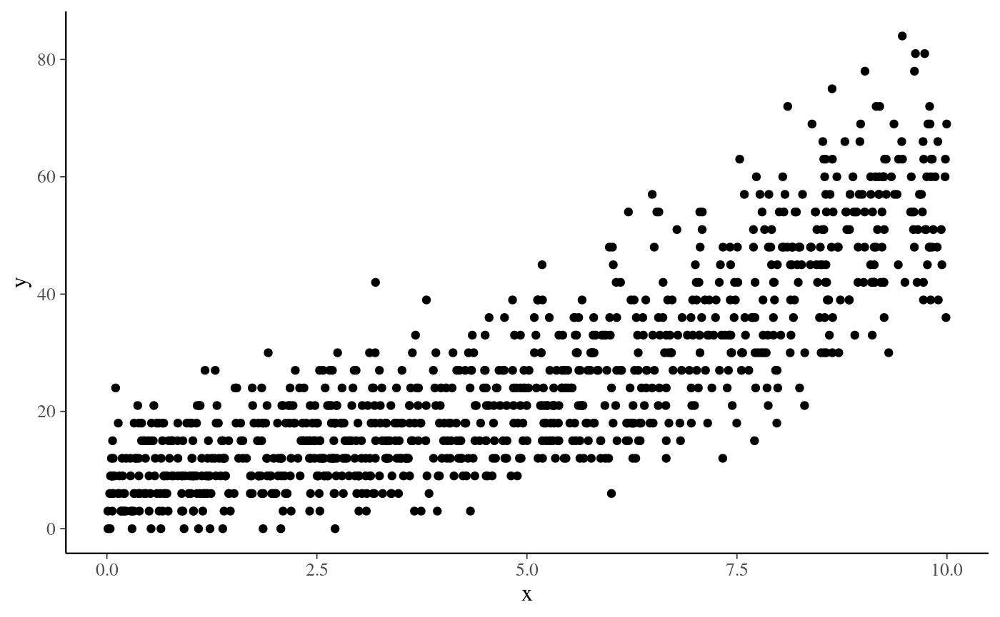
#Fit Poisson model using Stan glm wrapper
SAMPLING FOR MODEL 'count' NOW (CHAIN 1).
Chain 1:
Chain 1: Gradient evaluation took 0.000112 seconds
Chain 1: 1000 transitions using 10 leapfrog steps per transition would take 1.12 seconds.
Chain 1: Adjust your expectations accordingly!
Chain 1:
Chain 1:
Chain 1: Iteration: 1 / 2000 [ 0%] (Warmup)
Chain 1: Iteration: 200 / 2000 [ 10%] (Warmup)
Chain 1: Iteration: 400 / 2000 [ 20%] (Warmup)
Chain 1: Iteration: 600 / 2000 [ 30%] (Warmup)
Chain 1: Iteration: 800 / 2000 [ 40%] (Warmup)
Chain 1: Iteration: 1000 / 2000 [ 50%] (Warmup)
Chain 1: Iteration: 1001 / 2000 [ 50%] (Sampling)
Chain 1: Iteration: 1200 / 2000 [ 60%] (Sampling)
Chain 1: Iteration: 1400 / 2000 [ 70%] (Sampling)
Chain 1: Iteration: 1600 / 2000 [ 80%] (Sampling)
Chain 1: Iteration: 1800 / 2000 [ 90%] (Sampling)
Chain 1: Iteration: 2000 / 2000 [100%] (Sampling)
Chain 1:
Chain 1: Elapsed Time: 0.538768 seconds (Warm-up)
Chain 1: 0.569344 seconds (Sampling)
Chain 1: 1.10811 seconds (Total)
Chain 1: stan_glm
family: poisson [log]
formula: y ~ x
observations: 1000
predictors: 2
------
Median MAD_SD
(Intercept) 2.1 0.0
x 0.2 0.0
Sample avg. posterior predictive distribution of y:
Median MAD_SD
mean_PPD 25.3 0.2
------
* For help interpreting the printed output see ?print.stanreg
* For info on the priors used see ?prior_summary.stanregposterior_poisson <- as.matrix(stan_poisson)
plot_title <- ggtitle("Poisson Model Posterior distributions", "with medians and 80% intervals")
mcmc_areas(posterior_poisson, pars = c("(Intercept)", "x"), prob = 0.8) + plot_title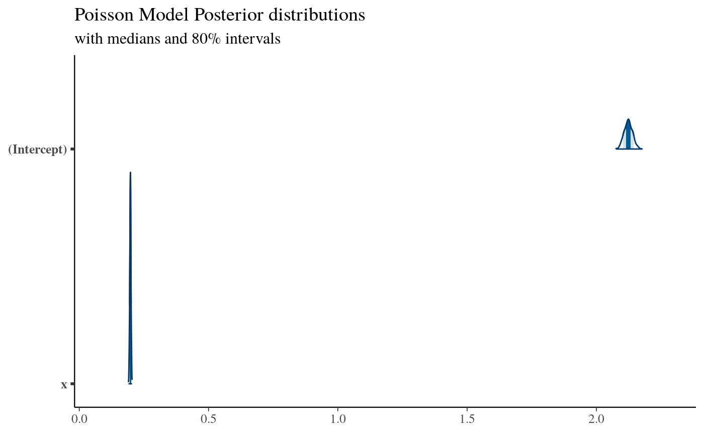
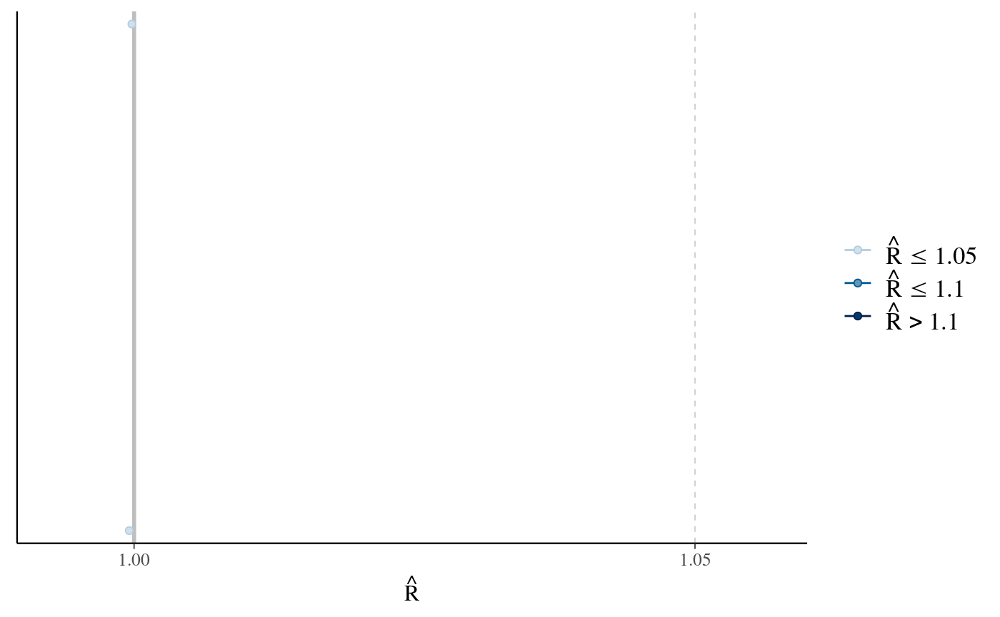
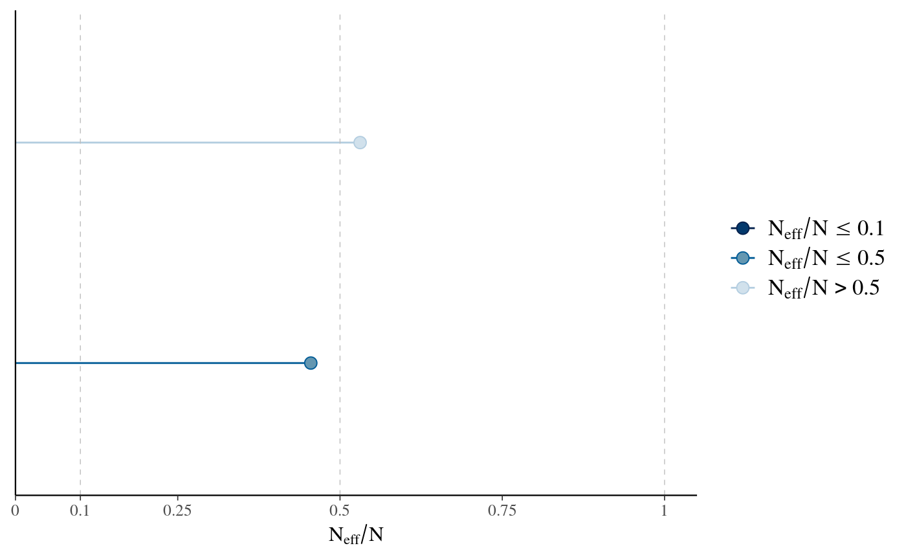
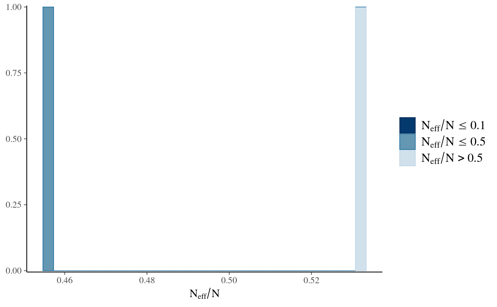
# there's a small enough number of parameters in the model that we can
# display their names on the y-axis
mcmc_neff(ratios) + yaxis_text(hjust = 1)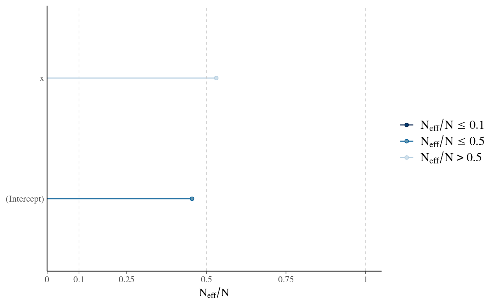
# can also look at autocorrelation
draws <- as.array(posterior_poisson)
mcmc_acf(draws, pars = c("(Intercept)", "x"), lags = 10)
##Fit negative binomial model using Stan glm wrapper
stan_nb <- stan_glm(y ~ x, data = modelling_data, family = neg_binomial_2, prior = normal(0,
2.5), prior_intercept = normal(0, 5), chains = chains, cores = no_cores)
SAMPLING FOR MODEL 'count' NOW (CHAIN 1).
Chain 1:
Chain 1: Gradient evaluation took 0.000233 seconds
Chain 1: 1000 transitions using 10 leapfrog steps per transition would take 2.33 seconds.
Chain 1: Adjust your expectations accordingly!
Chain 1:
Chain 1:
Chain 1: Iteration: 1 / 2000 [ 0%] (Warmup)
Chain 1: Iteration: 200 / 2000 [ 10%] (Warmup)
Chain 1: Iteration: 400 / 2000 [ 20%] (Warmup)
Chain 1: Iteration: 600 / 2000 [ 30%] (Warmup)
Chain 1: Iteration: 800 / 2000 [ 40%] (Warmup)
Chain 1: Iteration: 1000 / 2000 [ 50%] (Warmup)
Chain 1: Iteration: 1001 / 2000 [ 50%] (Sampling)
Chain 1: Iteration: 1200 / 2000 [ 60%] (Sampling)
Chain 1: Iteration: 1400 / 2000 [ 70%] (Sampling)
Chain 1: Iteration: 1600 / 2000 [ 80%] (Sampling)
Chain 1: Iteration: 1800 / 2000 [ 90%] (Sampling)
Chain 1: Iteration: 2000 / 2000 [100%] (Sampling)
Chain 1:
Chain 1: Elapsed Time: 2.32319 seconds (Warm-up)
Chain 1: 1.98158 seconds (Sampling)
Chain 1: 4.30478 seconds (Total)
Chain 1: stan_glm
family: neg_binomial_2 [log]
formula: y ~ x
observations: 1000
predictors: 2
------
Median MAD_SD
(Intercept) 2.1 0.0
x 0.2 0.0
Auxiliary parameter(s):
Median MAD_SD
reciprocal_dispersion 9.1 0.7
Sample avg. posterior predictive distribution of y:
Median MAD_SD
mean_PPD 25.3 0.5
------
* For help interpreting the printed output see ?print.stanreg
* For info on the priors used see ?prior_summary.stanregposterior_nb <- as.matrix(stan_nb)
plot_title <- ggtitle("Negative Binomial Model Posterior distributions", "with medians and 80% intervals")
mcmc_areas(posterior_nb, pars = c("(Intercept)", "x"), prob = 0.8) + plot_title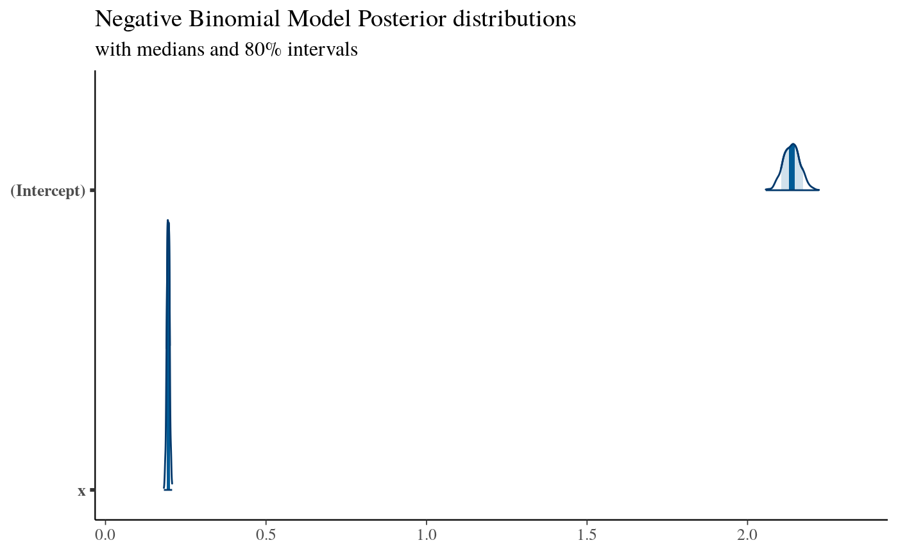
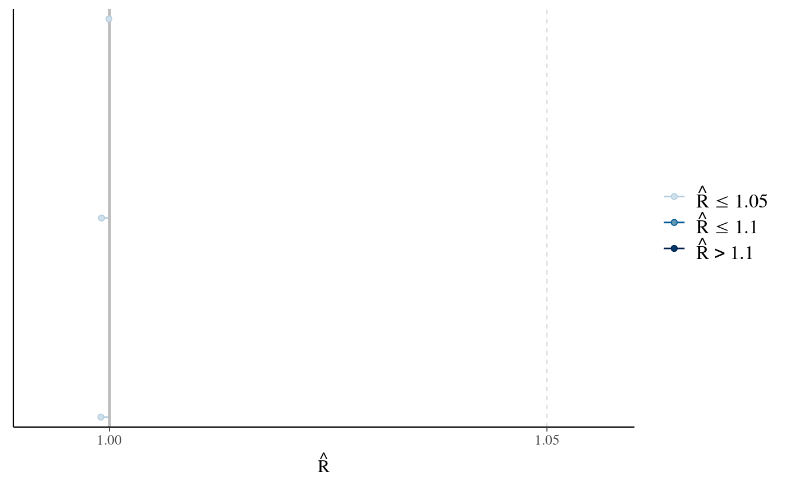
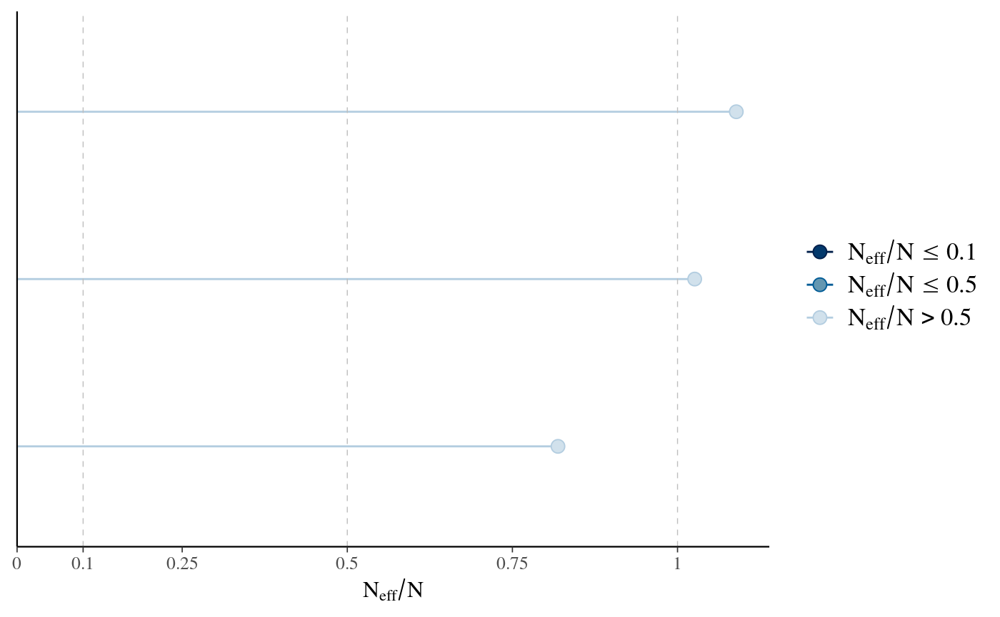
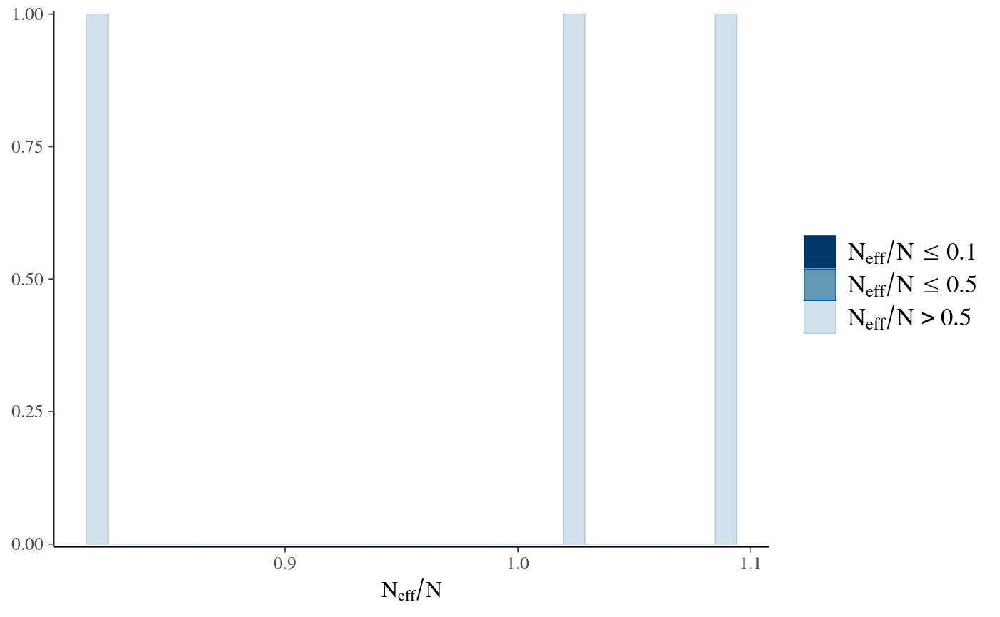
# there's a small enough number of parameters in the model that we can
# display their names on the y-axis
mcmc_neff(ratios) + yaxis_text(hjust = 1)
# can also look at autocorrelation
draws <- as.array(posterior_nb)
mcmc_acf(draws, pars = c("(Intercept)", "x"), lags = 10)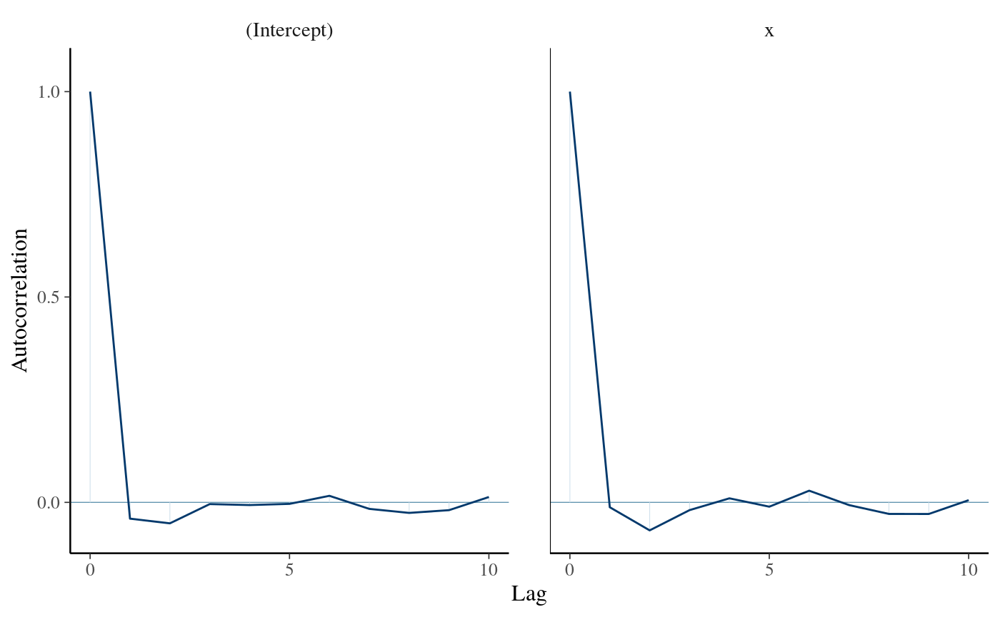
Poisson regression - hand built.
The last two examples used the rstanarm package which wraps the code and diagnotics up into something like the glm function. Here we fit a Poisson model using hand coded Stan code for the GLM.
N <- as.integer(nrow(modelling_data))
p <- as.integer(2)
modelling_data$y <- as.integer(modelling_data$y)
model_poisson <- "
data {
// Number of observations (an integer)
int<lower=0> N;
// Number of beta parameters
int<lower=0> p;
// Covariates
real x[N];
// Count outcome
int<lower=0> y[N];
}
parameters {
// Define parameters to estimate
real beta[p];
}
transformed parameters {
real lp[N];
real mu[N];
for (i in 1:N) {
lp[i] <- beta[1] + beta[2]*x[i];
// Mean
mu[i] <- exp(lp[i]);
}
}
model {
// Flat prior for mu (no need to specify if non-informative)
// Likelihood part of Bayesian inference
y ~ poisson(mu);
}
"
stan_poisson_fit <- stan(model_code = model_poisson, data = list(x = modelling_data$x,
y = modelling_data$y, N = N, p = p), cores = no_cores, chains = chains,
iter = iter, warmup = warmup, thin = 2)DIAGNOSTIC(S) FROM PARSER:
Info: assignment operator <- deprecated in the Stan language; use = instead.
Info: assignment operator <- deprecated in the Stan language; use = instead.
SAMPLING FOR MODEL '969164c09e269485b42249d4cfc13cc7' NOW (CHAIN 1).
Chain 1:
Chain 1: Gradient evaluation took 0.000106 seconds
Chain 1: 1000 transitions using 10 leapfrog steps per transition would take 1.06 seconds.
Chain 1: Adjust your expectations accordingly!
Chain 1:
Chain 1:
Chain 1: Iteration: 1 / 1000 [ 0%] (Warmup)
Chain 1: Iteration: 100 / 1000 [ 10%] (Warmup)
Chain 1: Iteration: 200 / 1000 [ 20%] (Warmup)
Chain 1: Iteration: 201 / 1000 [ 20%] (Sampling)
Chain 1: Iteration: 300 / 1000 [ 30%] (Sampling)
Chain 1: Iteration: 400 / 1000 [ 40%] (Sampling)
Chain 1: Iteration: 500 / 1000 [ 50%] (Sampling)
Chain 1: Iteration: 600 / 1000 [ 60%] (Sampling)
Chain 1: Iteration: 700 / 1000 [ 70%] (Sampling)
Chain 1: Iteration: 800 / 1000 [ 80%] (Sampling)
Chain 1: Iteration: 900 / 1000 [ 90%] (Sampling)
Chain 1: Iteration: 1000 / 1000 [100%] (Sampling)
Chain 1:
Chain 1: Elapsed Time: 0.30071 seconds (Warm-up)
Chain 1: 1.02336 seconds (Sampling)
Chain 1: 1.32407 seconds (Total)
Chain 1: posterior_poisson <- as.matrix(stan_poisson_fit)
plot_title <- ggtitle("Negative Binomial Model Posterior distributions", "with medians and 80% intervals")
mcmc_areas(posterior_poisson, pars = c("beta[1]", "beta[2]"), prob = 0.8) +
plot_title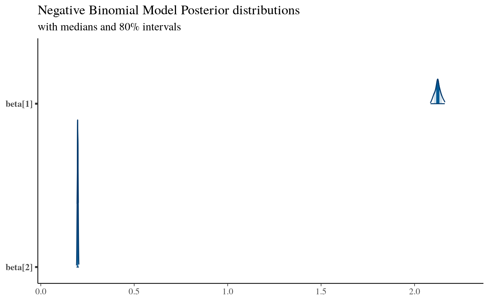
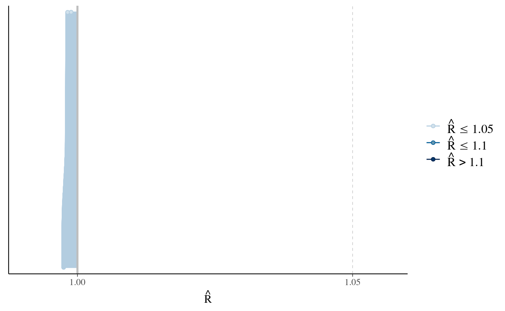
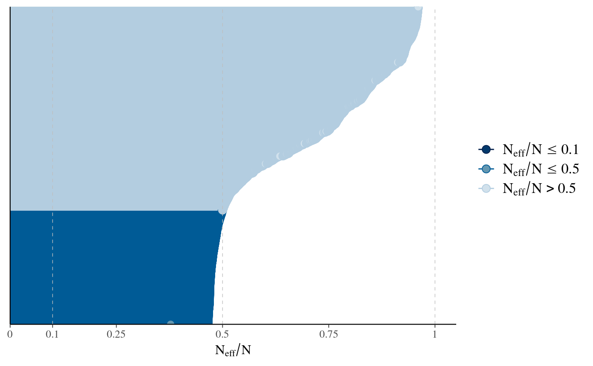
# there's a small enough number of parameters in the model that we can
# display their names on the y-axis
mcmc_neff(ratios) + yaxis_text(hjust = 1)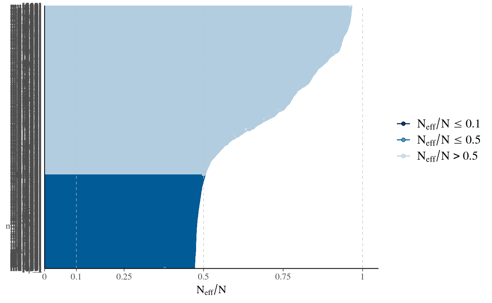
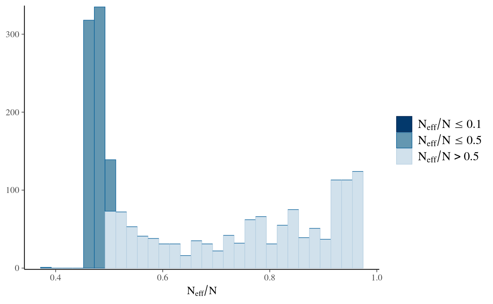
# can also look at autocorrelation
draws <- as.array(posterior_poisson)
mcmc_acf(draws, pars = c("beta[1]", "beta[2]"), lags = 10)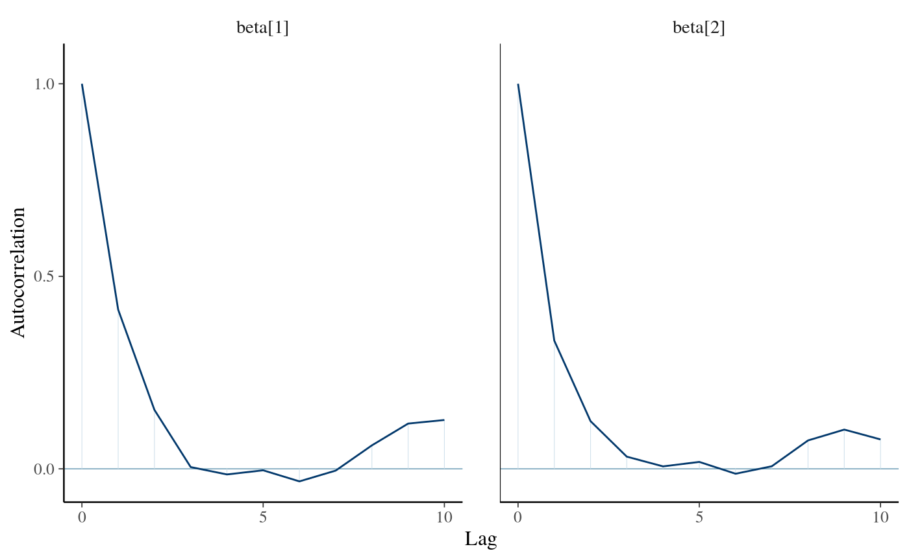
Zero Inflated Models
Heirarchical zero inflated gamma model. This a “hurdle” model, in which a bernoulli GLM produces zeros/nonzeros, and then a gamma GLM produces the nonzero values, using varying effects correlated with those in the bernoulli process.
# inverse logit
logistic <- function (x)
{
p <- exp(x)/(1 + exp(x))
p <- ifelse(x == Inf, 1, p)
p
}
# simulate data
N <- 1000 # number of cases
J <- 20 # number of clusters
NperJ <- N/J # cases per cluster
theta <- 1 # scale
mu <- c( 0 , log(7) ) # means of varying intercepts
id <- rep( 1:J , each=NperJ )
Sigma <- matrix( 0 , nrow=2 , ncol=2 ) # var-cov matrix for varying intercepts
Sigma[1,1] <- 0.15
Sigma[2,2] <- 0.5
Sigma[1,2] <- Sigma[2,1] <- -0.8 * sqrt( Sigma[1,1] * Sigma[2,2] )
alpha <- mvrnorm( J , mu=mu , Sigma=Sigma )
y1 <- rbinom( N , size=1 , prob=logistic( alpha[id,1] ) ) # sim zeros
y2 <- (1-y1) * rgamma( N , shape=exp(alpha[id,2])*theta , scale=theta ) # sim observed
# prep data for Stan
dat <- list(
y = ifelse( y2==0 , 20 , y2 ), # 20 to prevent gamma density gacking in vectorized code
iszero = y1,
N = N,
J = J,
Omega = diag(2),
id = id
)
model_zigamma <- '
data {
int<lower=0> N; // number of cases
int<lower=1> J; // number of clusters
real<lower=0> y[N]; // observed outcome
int<lower=0,upper=1> iszero[N]; // indicates a zero outcome
int<lower=1> id[N]; // cluster number for each case
cov_matrix[2] Omega; // diagonal prior
}
parameters {
vector[2] mu; // means of varying effects
cov_matrix[2] Sigma; // var-cov matrix for varying effects
vector[2] alpha[J]; // varying effects for each cluster
real theta; // log scale
}
model {
real pi; // probability of zero GLM
real mugamma; // mean of gamma GLM
Sigma ~ inv_wishart( 3 , Omega );
mu[1] ~ normal( 0 , 100 );
mu[2] ~ normal( 0 , 100 );
theta ~ normal( 0 , 100 );
for (j in 1:J) alpha[j] ~ multi_normal( mu , Sigma );
for (n in 1:N) {
pi = inv_logit( alpha[ id[n] , 1 ] );
mugamma = exp( alpha[ id[n] , 2 ] );
}
}
generated quantities {
real dev; // deviance of each set of samples
real pi; // temp for computing dev
real mugamma; // temp for computing dev
real rho; // correlation btw varying intercepts
real sdi[2]; // sd of varying intercepts
dev <- 0; // not sure need to init to zero
for ( n in 1:N ) {
pi = inv_logit( alpha[ id[n] , 1 ] );
mugamma = exp( alpha[ id[n] , 2 ] );
dev = dev + (-2) * if_else( iszero[n] , log(pi) , log1m(pi) + gamma_log( y[n] , mugamma*exp(theta) , exp(theta) ) );
}
for( k in 1:2 ) sdi[k] = sqrt( Sigma[k,k] );
rho = Sigma[1,2] / sqrt( Sigma[1,1] * Sigma[2,2] );
}
'
# optional init list
init_alpha = matrix( 0 , nrow=J , ncol=2 )
init_alpha[ , 2 ] <- rep( log(7) , J )
initlist <- list(list(
theta = 1 ,
mu = c( 0 , log(7) ) ,
Sigma = diag(2) ,
alpha = init_alpha
))
fit <- stan( model_code = model_zigamma , data = dat , iter = iter , warmup = warmup , init="random" , cores=no_cores, chains = chains,control=list(adapt_delta=.9,max_treedepth=20 ) )DIAGNOSTIC(S) FROM PARSER:
Info: assignment operator <- deprecated in the Stan language; use = instead.
Info: Deprecated function 'gamma_log'; please replace suffix '_log' with '_lpdf' for density functions or '_lpmf' for mass functions
Info: the if_else() function is deprecated. Use the conditional operator '?:' instead.
SAMPLING FOR MODEL '9dc7983397a9006ed9f27a81fd07593c' NOW (CHAIN 1).
Chain 1:
Chain 1: Gradient evaluation took 0.000308 seconds
Chain 1: 1000 transitions using 10 leapfrog steps per transition would take 3.08 seconds.
Chain 1: Adjust your expectations accordingly!
Chain 1:
Chain 1:
Chain 1: Iteration: 1 / 1000 [ 0%] (Warmup)
Chain 1: Iteration: 100 / 1000 [ 10%] (Warmup)
Chain 1: Iteration: 200 / 1000 [ 20%] (Warmup)
Chain 1: Iteration: 201 / 1000 [ 20%] (Sampling)
Chain 1: Iteration: 300 / 1000 [ 30%] (Sampling)
Chain 1: Iteration: 400 / 1000 [ 40%] (Sampling)
Chain 1: Iteration: 500 / 1000 [ 50%] (Sampling)
Chain 1: Iteration: 600 / 1000 [ 60%] (Sampling)
Chain 1: Iteration: 700 / 1000 [ 70%] (Sampling)
Chain 1: Iteration: 800 / 1000 [ 80%] (Sampling)
Chain 1: Iteration: 900 / 1000 [ 90%] (Sampling)
Chain 1: Iteration: 1000 / 1000 [100%] (Sampling)
Chain 1:
Chain 1: Elapsed Time: 25.8286 seconds (Warm-up)
Chain 1: 71.6094 seconds (Sampling)
Chain 1: 97.438 seconds (Total)
Chain 1: 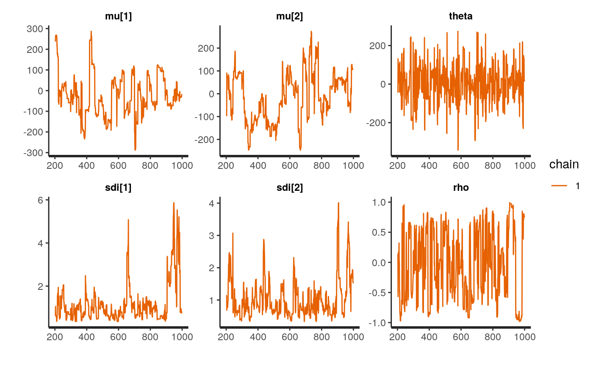
Inference for Stan model: 9dc7983397a9006ed9f27a81fd07593c.
1 chains, each with iter=1000; warmup=200; thin=1;
post-warmup draws per chain=800, total post-warmup draws=800.
mean se_mean sd 2.5% 50% 97.5% n_eff Rhat
mu[1] -21.93 15.89 99.67 -195.48 -33.20 243.08 39 1.00
mu[2] -13.07 25.32 105.59 -230.82 -10.37 201.26 17 1.15
theta 2.52 5.70 97.88 -188.18 7.65 185.50 295 1.00
sdi[1] 1.17 0.22 0.92 0.41 0.90 3.98 18 1.10
sdi[2] 1.02 0.09 0.59 0.38 0.83 2.80 45 1.00
rho -0.01 0.07 0.57 -0.93 0.01 0.92 75 1.00
Samples were drawn using NUTS(diag_e) at Wed Jul 24 18:50:27 2019.
For each parameter, n_eff is a crude measure of effective sample size,
and Rhat is the potential scale reduction factor on split chains (at
convergence, Rhat=1).#Bibliography